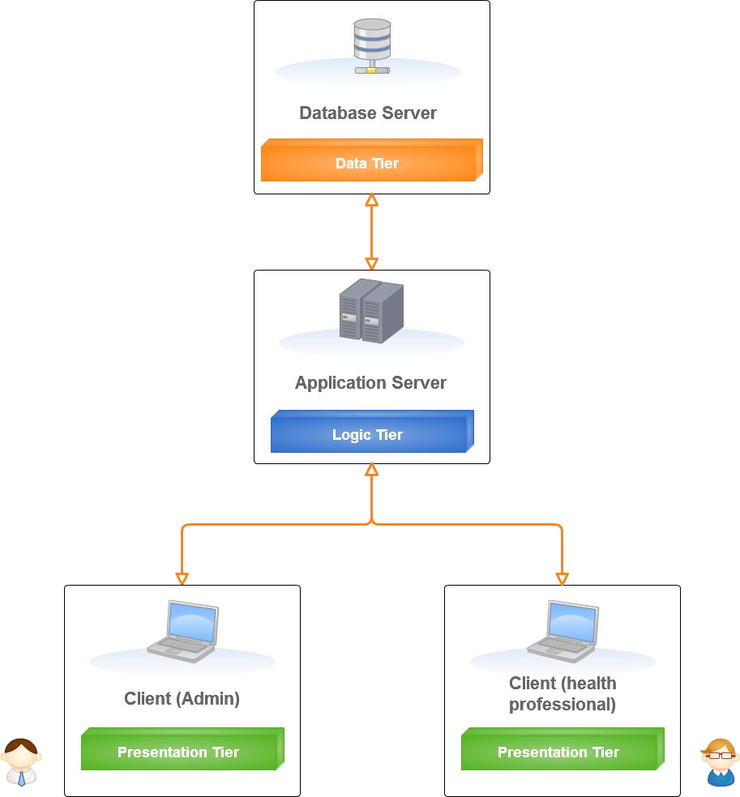
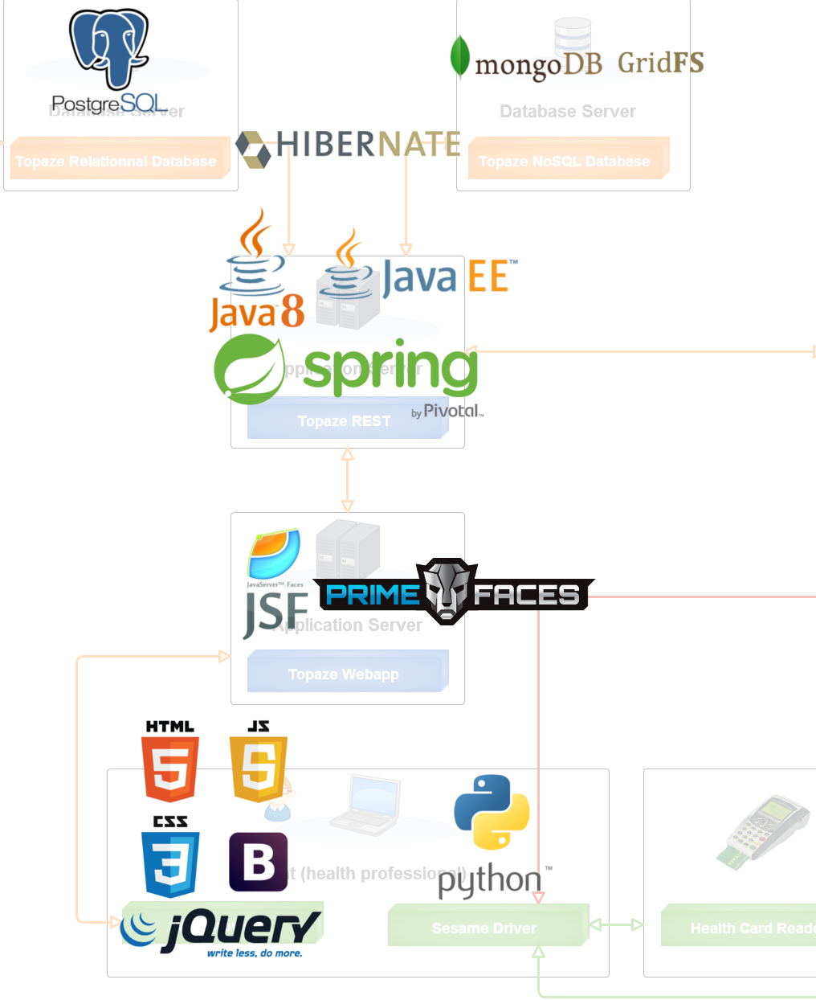

Projet de Fin d'Études
Architecture et développement Java backend pour une solution d'e-santé
Alexandre Rupp
3A - Filière Ingénierie des Systèmes d'Information - 13/09/2016
Plan
- Contexte du stage
- Présentation du projet
- Problématique
- Solutions mises en place
- Conclusion
Contexte du stage
L'entreprise
- La technopole de Sophia Antipolis
- Le groupe IDLOG (Idea & Supralog)
- Supralog :
- Progiciel (Intrassoc & Topaze)
- Technologie (Silex)
- Conseil (Amadeus, Air France, Pro BTP etc.)
L'équipe
- 5 personnes
- 1 chef d'équipe
- 2 développeurs à temps plein
- 1 apprenti
- 1 stagiaire (moi)
- Méthodologie Scrum adaptée.
Présentation du projet
Sesam Vitale
- Objectif: Dématérialiser les feuilles de soins.
- Enjeu principal: Le coût (FSP: 1,74€ -> FSE: 0,27€).
- Historique:
- 1993: Création du GIE SESAM-Vitale
- 1996: Cahier des charges SESAM-Vitale V1.0
- 1998:
- Agrément des premiers progiciels
- Déploiement des cartes vitales
- Depuis:
- Gestion des complémentaires
- Mises à jour des cartes vitales
Topaze
- 1er logiciel agréé SESAM-Vitale
- Cible: les métiers du paramédical
- Fonctionnalités :
- Création et télétransmission des FSE (Feuille de Soins Électroniques)
- Dossier médical du patient
- Comptabilité du cabinet
- Gestion des SCOR (SCan ORdonnance)
Topaze Web
- Début du projet en 2015
-
Objectifs:
- Version web de Topaze
- Nouveau code
- Mêmes fonctionnalités
- Ergonomie
- Agrément SESAM Vitale
- Migration des données
- Architecture 3-Tiers :
 Architecture 3-Tiers (simplifiée)
(Schéma de Tom Veniat, utilisé avec son accord).
(Schéma de Tom Veniat, utilisé avec son accord).
- Technologies :
 Technologies utilisées
Problématique
"Permettre la gestion du dossier médical d'un patient."Travail attendu :
- Analyse de l'existant (Topaze Maestro)
- Etude de la faisabilité des fonctionnalités
- Pour chaque fonctionnalité :
- Discussion du besoin
- Proposition d'une solution
- Spécification du modèle métier (BDD)
- Spécification de l'API REST
- Spécification des interfaces utilisateurs (si besoin)
- Implémentation
Travail réalisé
- Liste des documents
- Gestion des documents (création, lecture, modification, suppression)
- Gestion des différents types de documents
- Édition des documents textuels:
- Editeur de texte
- Galerie d'images intégrée
- Bibliothèque de modèles intégrée
- Champs génériques
- Gestion des scans de documents
Liste et gestion des documents

- 2 principaux types de documents
- Usage de PostgreSQL & MongoDB GridFS
- Usage du générateur de code pour les entités et DAOs
- Implémentation dans topaze Rest (services, controller, composants métiers etc.)
- Implémentation du MVC dans Topaze Webapp
Liste et gestion des documents
Editeur de texte : CKEditor
- Choix d'une solution, en fonction de :
- Nombre de contributeurs et utilisateurs
- Ancienneté du projet
- Support proposé
- Licence
- Fonctionnalités et possibilité de personnaliser
- Intégration du composant (Javascript <-> Java)
Editeur de texte : CKEditor
Editeur de texte : Les champs génériques
- But : Mise à disposition de données issues de la Base.
-
Fonctionnement :
- Choix dans une arborescence
- Insertion de la balise
- Remplacement par la valeur (à la sauvegarde)
-
Réalisation :
- Liaison des données stockée en classes
- Introspection de Java
- Utilisation du moteur de gabari "Velocity"
- Remplacement en 3 phases :
Code <-> Notation pointée <-> donnée
Editeur de texte : Galerie de modèles de textes
- Sauvegarde des documents texte (avec champs génériques)
- Arborescence de documents

Modèle UML du système de fichiers. - Création d'un tag JSF (réutilisable)
Editeur de texte : Galerie d'images
Numérisation de documents
- Serveur Sesame
- Driver Pyvital
- Librairies PyTwain et Pyllow de Python
- Intégration d'un cropper

Numérisation de documents
Autres tâches
- Réalisation d'un installateur windows pour PyVital
- Authentification à Pyvital par poste utilisateur
Conclusion
- Développement du dossier médical et fonctionnalités connexes
- Montée en compétence sur les technologies Java (Java 8, Java EE, JSF, SPRING (IOC, AOP, MVc), Hibernate).
- Architecture intéressante
- Aspects métiers liés à la sécurité sociale.
- Complémentarité avec le stage précédent
- Travail dans une petite entreprise & activité d'édition logiciel.
- Un CDI à l'issue du stage.